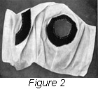
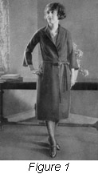
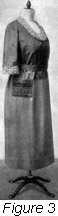
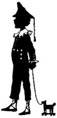

1926—The New-Way Course in Fashionable Clothes-Making
Lesson 42—The One-Piece Dress
The One-Piece Dress
Straight-line dresses, or one-piece dresses as they are more familiarly called, have become one of the most popular features of the modish woman's wardrobe. For street wear and home wear, for business wear and dress wear, the one-piece dress is as becoming as it is appropriate. Of course, although this type of dress is easily made and quite simple in construction, it must be carefully fitted and well suited to the individual to be becoming.
A one-piece dress is not necessarily cut in one piece, or even in one length. These dresses are often cut and made with low waist lines. The skirt is attached the waist at a becoming line which varies on different figures but usually is about 10 inches below the waist-line. With this type of dress one may wear a belt or sash. The belts may be of self material, fancy metal novelty girdles are used a great deal, and leather belts are always in good taste. The choice of the belt or sash depends upon the requirements of dress and material, and also upon the individual requirements of the figure for which the dress is being made.
For the stout woman, the well-made one-piece dress is ideal. The straight lines of this type of dress lend graceful slenderness to the figure. The woman who is large above the hips will find it particularly becoming. Though the style remains the same, many striking trimming touches can be added that make the frock distinctive and attractive. A pretty Oriental girdle, a collar of filet lace, perhaps a bright trimming of Persian ribbon—there are any number of ways to make the simple one-piece dress attractive.
An Ideal Business Garment
Because of its smart neatness, its tailored simplicity the one-piece dress makes an ideal garment for wear at business or school. Business dress, you know, must be attractive without being conspicuous, pretty without being elaborate, tailored without being severe. The one-piece dress, when well-made, meets all these requirements and adds the advantage of being a very simple garment to slip into in the morning when one is in a hurry.
The business woman who prides herself upon being neat and well-dressed should have at least two one-piece dresses. If she has two, she can keep both in good condition by changing occasionally—and she will always have one to wear while the other is at the cleaners. It is quite economical to have dresses of this type, too, for they save the expense and trouble of laundering blouses and if they are well-made and well-trimmed they will always be pretty and attractive without being in the least conspicuous.
However, business is not the only place where the one-piece dress is appropriate. You will find it excellent for wear in the street, for afternoon visiting, and for wear under a coat. And when it is made of silk, with a smart touch of trimming in the form of a rich girdle or Persian ribbon sash, it makes a splendid frock for "dress up" occasions.
Materials to Use
Any material that is suitable for tailored dresses and any that is heavy enough to drop back into position after the arms are lifted is suitable for a one-piece dress.
If light-weight material is used, the skirt should be so planned that it has weight which will keep the dress in position. For instance, tucks or folds at the bottom of the skirt may be used if they do not detract from the height of the person. For a person who can wear tucks and folds at the bottom of the skirts, such lightweight materials as crepe de chine, Canton crepe, voile and cotton crepes may be used. For dresses where the weight need not be considered, serge, tricotine, Poiret twill, taffeta silk, faille, satin, and an endless variety of novelty materials may be used.
Dresses made of wash materials such as ginghams, voiles or light-weight silks are much more attractive when made in two sections as a thin dress that is narrow and tight is unattractive. The method of making the one-piece dress in two sections will be taught later in this lesson. The skirts of very thin dresses should have a little fullness.
Making the One-Piece Dress (Illustration 42-1, -2 and -3)
The whole smartness and charm of the one-piece dress lies in its perfect fit, its harmony with the lines of the figure. Let us see how this type of dress is made, and let us follow each step-by-step direction carefully so that there will be no little mistakes to mar the beauty of the frock.
The simplest type of the one-piece dress is cut with set-in sleeves, the body of the dress being made in two pieces—the front and back. If heavy material is used, suitable for tailoring, slashed pockets are best, and all edges of the dress may be bound with military braid. A collar may be used or not, just as the wearer desires. The sleeves may be long or short. For street or business wear the long sleeve or three-quarter sleeve is most appropriate. If the material used is dark in color, a belt of contrasting color in some bright shade will add just the right note of vividness. For the slight, youthful figure a sash is recommended, but for most types of figures, the narrow belt is best.
Let us first consider the dress illustrated in 42-1. It is cut in three pieces with the opening down the center of the front, which is, strictly speaking, a typical coat dress. The dress pictured opens all the way down the front and is faced just as a long coat is faced. In this particular frock a vest is used and both vest and sleeves are attached to a lining which later is basted to the outer part of the dress. This is an excellent plan as it enables the lining to be removed and cleaned whenever necessary. Illustration 42-2 shows the lining with the facing applied to the armcye. This lining is now ready for the sleeves.
The dress shown in illustration 42-3 is a good example of a one-piece dress with the skirt set on at a low hip line. The material used for the upper part is not like the material used for the skirt, but the dress may be made of all one material if you prefer. Contrasting materials often create striking effects.
- Prepare the pattern and material.
- The dress illustrated has no lining, as the sleeves are attached to the waist. This dress may be cut in kimono style, the sleeves may be short or long. If long, they are lengthened by using a lower section in the sleeve. In cutting the kimono waist it will be found that if long sleeves are desired they will have to be pieced some place, either above or just below the elbow, as materials suitable for this type of dress are seldom wide enough to cut long sleeves without piecing. The clever dressmaker can so piece a garment that the piecing becomes an ornament, a decoration. When adding to kimono sleeves, add the lower section as a trimming, not merely as an additional section set on.
- Pin the pattern in position for cutting. Arrange the parts so that the least possible material is wasted. If you are using a commercial pattern, you will find with it a cutting chart that tells you just how to place the parts of the pattern to save the most material.
- Now cut your waist and pay very strict attention to the up and down of the material, also the right and the wrong sides. If the kimono style is used you will find that the material will run the wrong way either on the front or back, so it will be wise to use material that has no up and down in the pattern. If the material does have an up and down, make the nap on the front of the garment run the right way.
- After the waist and sleeves are cut out, remove the patterns and baste.
- When correctly basted in position, fit the waist on the person for whom it is being made, or on the dress form.
- Remove and make whatever alterations are necessary.
- At this point it is best to finish the waist at the neck and finish the sleeves. This work will be found easier to do now than later when the skirt and waist are attached. In the dress pictured, a collar is used at the neck. This type of finish is neat and attractive.
- One of the advantages of a one-piece or straight dress that is made in two sections is that the skirt can be cut wider and fulness added if it is found that it is too narrow for the wearer. The skirt is in two pieces, and to add width simply cut these pieces as wide as they need to be to give the desired width. When attaching to the waist, arrange the fulness in very scant gathers, placing the most of it in the back and little at the front. As much as a half yard can be added to the skirt without spoiling the appearance at the hip line. The fulness in the dress illustrated is laid in a box plait at the back.
- If you wish the fulness arranged in gathers cut the skirt and join it at the seams, run two gathering strings at the top of the skirt, the first one-quarter of an inch from the edge and the second one-half an inch below the edge—in other words, one-quarter of an inch apart.
- Make an underturning on the lower edge of the waist and baste the skirt in position. The edge of the turning on the waist should just cover the lower shirring on the skirt.
- Now slip the dress on the dress form or on the person. This is the most important fitting, and the dress should be put on the person for whom it is intended, if possible. Otherwise the form will have to be used. Arrange the belt around the waist to hold the dress in the position it will be when it is worn. Observe the dress carefully from all angles and see that it hangs properly and is satisfactory from all points.
- If the dress falls in below the hips or has the appearance of being too long from the neck line to the hip line, take a small dart at the belt line in such manner that the belt will cover it when the dress is worn. This dart will take up the extra length. This dart should be made before the length of the skirt at the bottom is determined. After the dart is pinned in, be sure that the line at the hip where the skirt is joined is not higher at the back than in the front. If it is, change the line across the front by taking the necessary amount off the bottom of the waist.
- You are now ready for the skirt length. One-piece dresses somehow seem shorter than they really are, and when one seats oneself in a one-piece dress the skirt will draw up in the front if it is the least it narrow. Therefore it is a wise plan to make the skirt about a half-inch or inch longer than the usual length of one's skirts. Be sure that the hem is turned up evenly all around.
And now, your one-piece dress is finished. Isn't it smart, attractive, neat? Isn't it the ideal frock for shopping, for afternoon visiting, for business wear? You will make many one-piece dresses when you begin to make clothes for yourself—and you will apply many attractive trimming ideas to the one-piece foundation. If you have mastered this lesson, you are now in possession of a knowledge that will enable you to make always, at all times, with little trouble and at little expense, dresses that you will be proud to wear.
Of course, there are various types of one-piece dresses. Glance through a fashion book and you will find many dresses that will appeal to you, that are made along the same lines as the garment taught here. You will find that by changing just the collar or the belt or the sleeves that you can change the very appearance of the garment—make it seem like an entirely new and different style. By referring to former lessons you will be able to make these style changes without difficulty—you will know that on gored skirts it is necessary to finish the top of the hem with a binding or tape to avoid bulkiness. You will know that set-in sleeves should be bound at the armscye and with the binder attachment on your sewing machine you will be able to incorporate into your frock many pretty style features. You will know also how to vary the collar to suit your tastes.
But whether your dress is made with roll collar or convertible collar, whether you use a self-material belt or an Oriental girdle—your one-piece dress should be smart, neat and attractive in appearance. As it is usually devoid of all trimming saving collar and cuffs, and sometimes military braid, the one-piece dress must depend entirely upon its fine workmanship to make it a garment of charm and distinction. But in its very simplicity, there is a certain charm which no other garment can boast, and it is for this we want you to strive.
It is the charm of tailored lines, of lines harmonizing with the lines of the body, of seams made neatly and finely—of a dress constructed carefully and with a regard for fine workmanship.
If you have followed this lesson carefully, and if you have mastered your lessons on design, you will know exactly what type of dress is suitable to you and you will know how to make it without trouble. Bear in mind that careful pressing of the finished frock is quite important and if correctly done will add to its tailored charm.